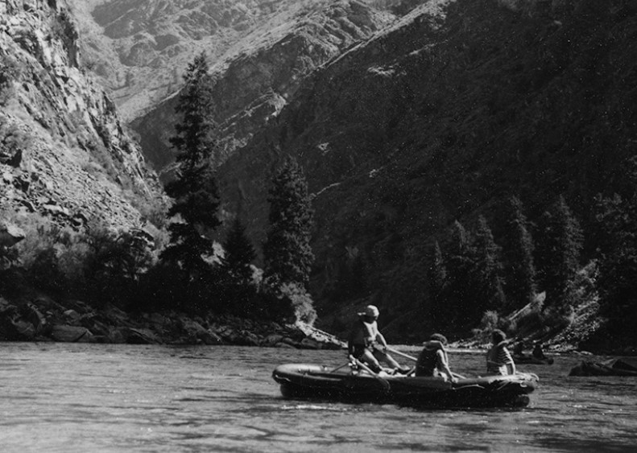

Our company was founded in 1998 by a group of passionate outdoor enthusiasts who shared a love for whitewater rafting. It all started with a single raft and a dream to explore the untamed rivers of the Pacific Northwest. Inspired by the region's natural beauty and the thrill of navigating its rapids, they decided to turn their hobby into a business that could share these experiences with others. Over the years, our company has grown from a small, tight-knit team into a leading provider of rafting adventures. Our founders' commitment to safety, customer satisfaction, and environmental stewardship has remained at the core of everything we do. We have expanded our operations to include multiple rivers across the country, each offering a unique blend of excitement and scenic beauty.
Our guides are highly trained professionals who bring a wealth of knowledge and experience to every trip. They are not only skilled in handling the rapids but are also passionate about educating our guests on the history and ecology of the rivers we navigate. This dedication to both adventure and education sets us apart in the industry. Today, Rafting Company is proud to have introduced thousands of people to the joys of whitewater rafting. From family-friendly floats to challenging Class V rapids, we offer a wide range of trips tailored to all skill levels. As we look to the future, we remain committed to our founding principles and continue to seek out new and exciting ways to share the wonders of the great outdoors with our clients.